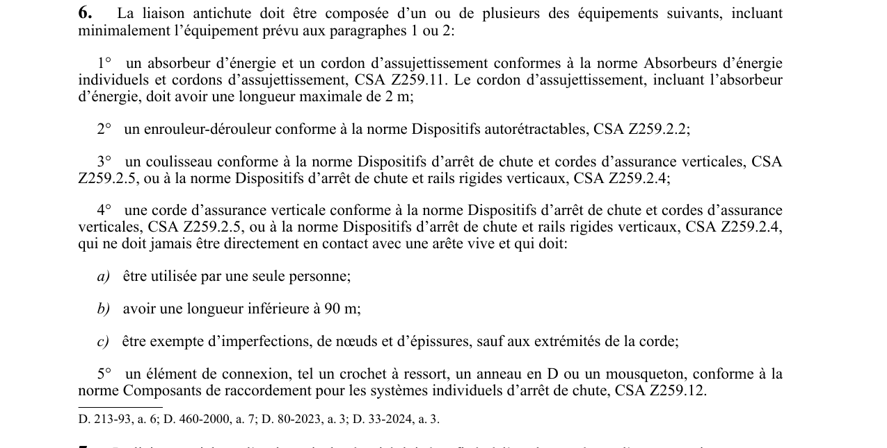

art-6-RSSM : composition liaison antichute certifiée
Un article du wiki ⚖️ Recueil législatif
En bref
La liaison antichute doit comprendre au moins l'un des équipements suivants : un absorbeur d'énergie et cordon d'assujettissement (max. 2 m), un enrouleur-dérouleur, un coulisseau ou un élément de connexion certifiés. Cette obligation vise l'employeur et le travailleur.
Visé : employeur ; travailleur · Nature : obligation
🌐 LegisQuébec · 📄 PDF officiel
Texte officiel : capture du PDF

Toucher l'image pour l'agrandir🔗 Voir art. 6 RSSM dans le PDF (page 8)
Version : texte officiel du RSSM (RLRQ c. S-2.1, r. 14), à jour au 1er mai 2024 — Éditeur officiel du Québec
Repères
- cordon d'assujettissement max. 2 m (avec absorbeur, CSA Z259.11
- enrouleur-dérouleur CSA Z259.2.2
- coulisseau CSA Z259.2.5 ou Z259.2.4
- corde d'assurance max. 90 m, usage par une seule personne, exempte de nœuds sauf aux extrémités
- élément de connexion CSA Z259.12
Points clés
- Cordon d'assujettissement max. 2 m avec absorbeur (CSA Z259.11), enrouleur-dérouleur (CSA Z259.2.2), coulisseau (CSA Z259.2.5 ou Z259.2.4), corde d'assurance verticale (max. 90 m, usage unique, exempte de nœuds et d'épissures sauf aux extrémités), ou élément de connexion (CSA Z259.12) · les paragraphes 1 ou 2 doivent minimalement être présents.
Sanctions
- Constat d'infraction par la CNESST (Code de procédure pénale).
- Amendes : art. 236 et 237 de la LSST (récidive aggravante).
Voir aussi
- art. 4 : harnais chute plus 3 mètres · champ d'application : le port d'un harnais de sécurité est obligatoire pour le travailleur exposé à une chute de plus de 3 m (9,8 pi) de sa position de travail, sauf lorsqu'il n'utilise qu'un moyen d'accès ou de sortie ou s'il est protégé par un filet de sécurité.
- art. 5 : conformité harnais liaison antichute · *obligation : le harnais de sé
Pages qui pointent ici (5)
- art-4-RSSM : harnais chute plus 3 mètres Recueil législatif
- art-5-RSSM : conformité harnais liaison antichute Recueil législatif
- art-7-RSSM : systèmes ancrage harnais certifiés Recueil législatif
- art-8-RSSM : protection chute objets travailleurs Recueil législatif
- RSSM : Dispositions générales (art. 1 à 11) Recueil législatif